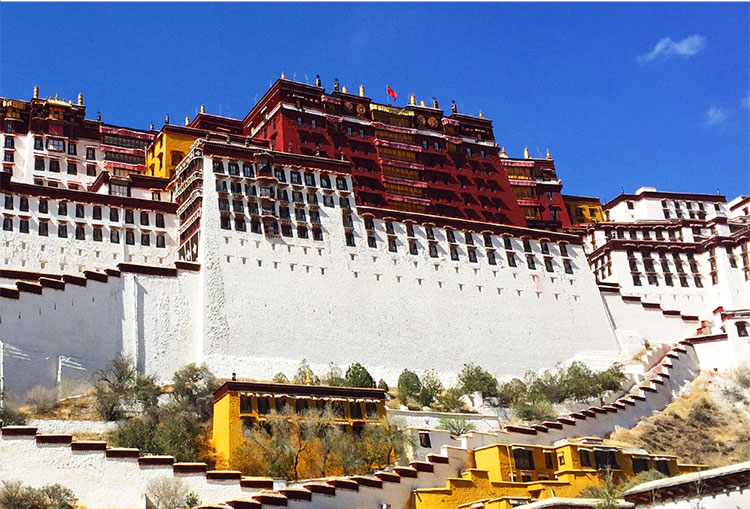

宾利添越SUV极致之旅
越藏地XXX
第一次，添越SUV在中国公开试驾
超豪华SUV的越野本性，盛邀体验
第一次，登临最接近太阳的城邦
用5天4晚超五星级的尊崇
以量身定制的互动项目诠释
一部“无所不及的宾利”
你可能去过西藏
但你一定没和宾利一起去过西藏
- 地形钮一键切换，从容面对不同险峻地形
- 新一代12缸发动机的澎湃动力， 尽情驰骋高原
- 大容量油箱，探索美征服险，历更多未历之景
- 前后座同样奢适，后排采用较高座椅设计，可尽揽沿途美景；
- 超大后备箱空间，容纳长途旅行一切所需
- 第1天拉萨 抵达 入住瑞吉酒店
- 第2天吞巴 赏藏戏 藏文字 制作藏香 大昭寺
- 第3天羊卓雍错 羊湖午餐 绘制唐卡 百亿像素照片
- 第4天拉萨 布达拉宫 瑞吉酒店就餐 甘丹寺 越野路段
- 第5天拉萨 返程
用黄金、珍珠、珊瑚、琉璃、青金石
绘制属于你的唐卡
唐卡的创作过程非常讲究。传统绘之前要向活佛问仆，沐浴净身，焚香祷告，一边诵经，一边备料，然后定位、起稿、着色、勾线、描金、开光加持，您不仅可以品鉴观赏它的创作过程，亦能亲手绘制自己的唐卡。
带走亲手制作的西藏味道
在藏区，不管是寺庙，还是普通人家，都会散发着一种神奇的味道，它夹杂着草原的草香和酥油香，混杂在空气中。如何带走西藏味道，不妨动手亲自制作秘宝古香。
学用藏文字写扎西德勒
作为海拔最高的文字，又有人称藏文是“写在世界屋脊上的文字”。
此行你不仅可以拜访藏文字创始人故居，还能学写藏文名字、藏文祝福。
羊湖百亿像素大片拍摄
“天上的繁星，人间的羊湖”。
不可能错过的羊湖之美，
用百亿像素的大片定格留念。
带你去
你不知道的西藏

“50元人民币背后的美景”布达拉宫
始建于公元7世纪的布达拉宫，据说是藏王松赞干布为远嫁西藏的唐朝文成公主而建。后被选为第五套人民币的50元背面图案，站在药王山观景台，就能拍出与人民币背面同样角度的布达拉宫全貌。
没去过大昭寺，
就等于没去过拉萨。大昭寺
民间亦有“先有大昭寺，后有拉萨城”的说法，距今已有一千多年的历史，那些从四面八方而来，一路磕长头的朝拜者，最后的目的地就是大昭寺。
你见，或不见我，
我就在那里，不悲不喜。玛吉阿米
仓央嘉措（西藏六世达赖活佛，西藏最浪漫的诗人），行程中我们将安排在玛吉阿米用膳，于八廓街转角，品一杯甜茶，时间仿佛穿越回仓央嘉措与玛吉阿米一见钟情的那刻。
戴着面具、没有舞台，
被誉为藏文化的活化石。藏戏
作为第一批国家非物质文化遗产，藏戏也被称为“藏文化的活化石”，透过几分威武、几分神秘的面具，聆听高亢雄浑的天籁之音，讲述一代又一代的传奇故事。
风景美如画，
画皮2曾在这里取景。洋湖
与纳木错、玛旁雍错并称西藏三大圣湖，
途经海拔5190米的那根拉山口，
是此行的最高海拔。
第三极
纪录片 导演/曾海若
感受藏族情怀，倾听历史之歌。
首部全面反映青藏高原人与自然和谐相处的纪录片。
可可西里
电影 导演/陆川
在可可西里你留下的每个脚印，
都有可能是人类留下的第一个脚印。
尘埃落定
小说 作者/阿来
从康巴土司家族的兴衰，
感受沉寂几千年的土地上文明的更替。
藏地密码
长篇小说 作者/何马
“在我眼里，《藏地密码》是一部奇书，
一部以探险的视角追寻西藏千年隐秘历史的长篇著作。”
西藏自治区旅游局局长巴珠
TIBET
专辑 歌手/Waterbone
想象把高原、雪山、净土化成音符。
入藏前准备
高反注意事项
- 对自已的身体有一个大概的检查，保持良好的心态
- 入高原前一周开始服用红景天胶囊以缓解高原反应
- 若有长期运动习惯，建议在进入高原两周前暂停剧烈的身体锻炼。
- 需要感冒、头痛、晕车药品等，可以嘱托我们为您提前准备好。
不建议来到高原活动
具有长期慢性疾病的人群
- 心脑血
管疾病 - 呼吸道
疾病 - 心脏病
- 高血压
穿衣攻略
- 洋葱式穿着冲锋衣
抓绒衣 - 防晒墨镜 遮阳伞
帽子 防晒霜 - 鞋子行程无长途跋
涉，舒适即可
选择“发送给朋友”
与好友同行